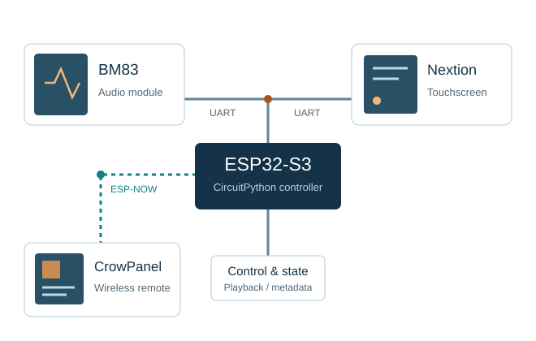

Embedded audio & remote interfaces
BM83 audio control system
An ESP32-S3 controller that brings playback controls, track information, and remote displays into one audio system.
The work spans CircuitPython, a BM83 Bluetooth module, a Nextion touchscreen, and a wireless CrowPanel interface.
- CircuitPython
- ESP32-S3
- UART
- ESP-NOW
- LVGL
